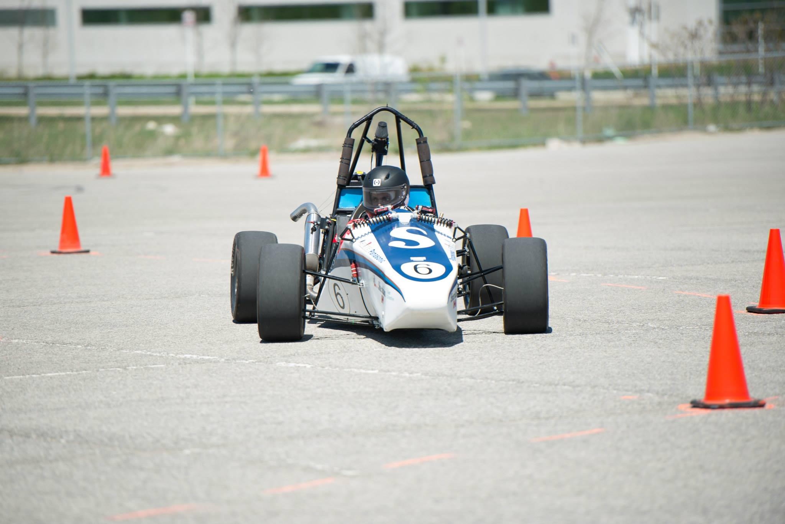

Kenneth Faria
547 Kelvedon Mews, Mississauga, Ontario, L4Z 1G3
Tel. (905) 867-7886,
|
 |
| hi | |
Designed equibiaxial test machine that applied a uniform load along the circumference of an elastomer sample in order to put it under pure uniaxial strain. Currently in the manufacturing stage of project.
Designed and performed a series of test procedures to gather data for a feasibility study to be performed on the implementation of a robotic cell installation in the smelting industry. Was in charged of every aspect of the mechanical design portion of the project, including design, prototyping and experimentation.
Aided in various industry partered design projects invovling clean-sheet designing, product prototyping, and reverse engineering.
High School Diploma, Philip Pocock CSS, Mississauga (2009)
Adv. Diploma in Mechanical Engineering Technology, Sheridan College (2014)
BSc in Computer Science, York University (Second year)